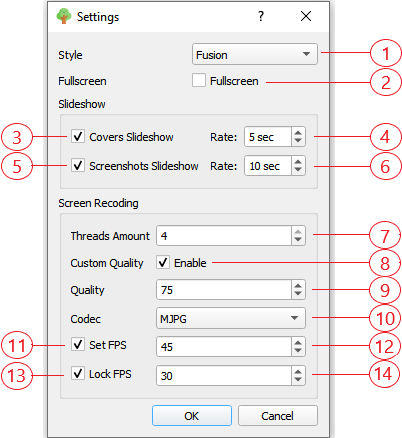

Окно настроек
Содержание

- Стиль. Из выпадающего списка стилей вы можете выбрать из предложенных стилей наиболее подходящий Вам стиль.
- Полноэкранный режим. Если установлен, то устанавливает экран приложения в полноэранный режим.
- Слайдшоу обложек. Если установлен, то начинает слайдшоу обложек, т.е. автоманически менять обложки с переодичностью установленной в пункте 4, если обложек в соответсвующей папке больше одной.
- Устанавливает период обновления обложки.
- Слайдшоу скриншотов. Если установлен, то начинает слайдшоу скриншотов, т.е. автоманически менять скриншоты с переодичностью установленной в пункте 6, если скриншотов в соответсвующей папке больше одной.
- Устанавливает период обновления скриншотов.